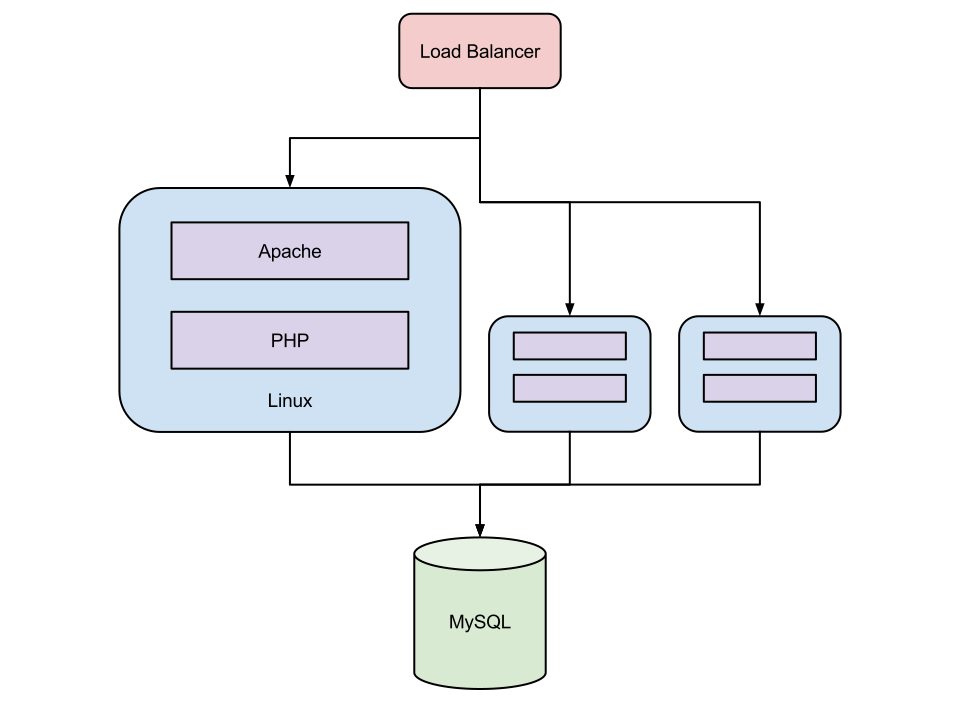
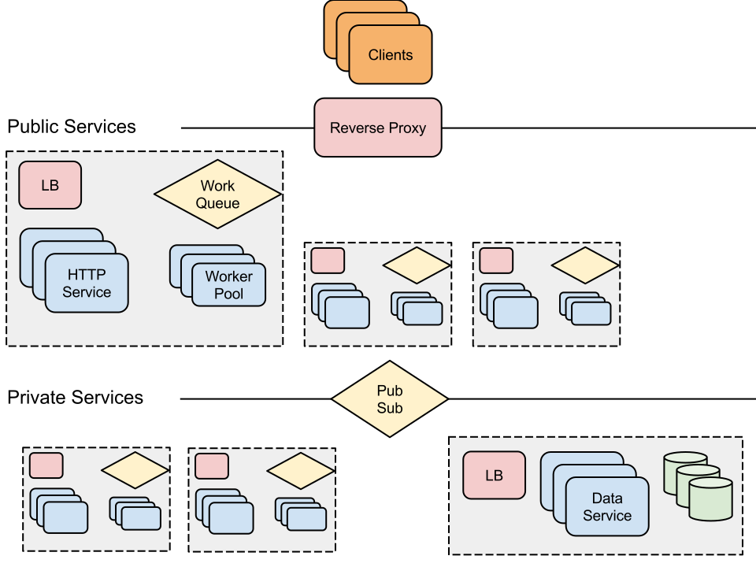
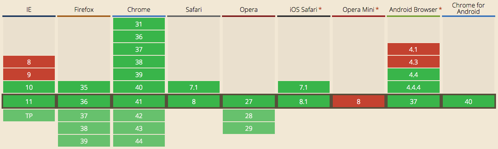
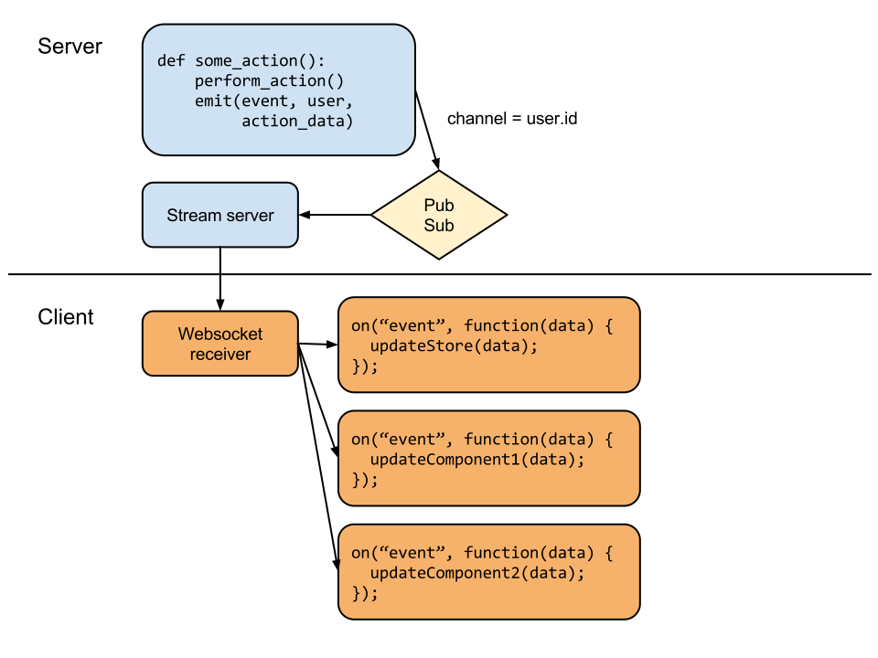

the web is
service oriented


the shift was gradual
platform play is table stakes
responsiveness is an expectation
it's not as hard as it used to be

http://caniuse.com/#feat=websockets
just because it's easy, doesn't mean it's easy to do right
realtime transport design is not a solved problem
platform 🆚 realtime

events are a proxy for state change
isolating data mutation is key
REST endpoints fully describe application state
realtime producer = REST consumer
what API endpoints changed?